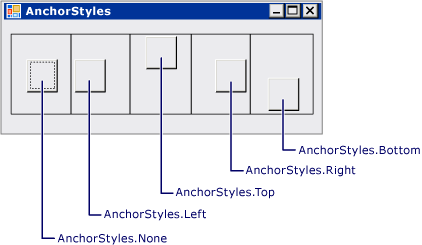
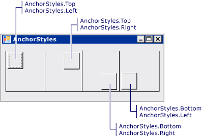
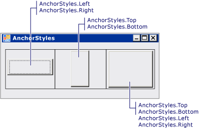

Практическое руководство. Привязка и закрепление дочерних элементов управления в элементе управления TableLayoutPanel
Элемент управления TableLayoutPanel поддерживает свойства Anchor и Dock в своих дочерних элементах управления.
Выравнивание дочернего элемента управления в ячейке TableLayoutPanel
Создание элемента управления TableLayoutPanel в форме.
Установите для параметра TableLayoutPanel элемента управления ColumnCount и RowCount свойства 1.
Создайте элемент управления Button в элементе управления TableLayoutPanel. Элемент Button расположен в левом верхнем углу ячейки.
Измените значение свойства Button элемента управления Anchor на
Left. Элемент управления Button выровняется по левому краю ячейки.Note
Такое поведение отличается от поведения других контейнерных элементов управления. Когда свойству Anchor присваивается значениеAnchor, дочерние элементы управления других контейнерных элементов управления не перемещаются, а расстояние между закрепленным элементом управления и границей родительского контейнера фиксируется.
Измените значение свойства Button элемента управления Anchor на
Top, Left. Элемент управления Button займет левый верхний угол ячейки.Повторите шаг 5 со значением из
Top, Rightдля перемещения Button элемента управления в правом верхнем углу ячейки. Повторите процедуру, используя значенияBottom, LeftиBottom, Right.
Растяжение дочернего элемента управления в ячейке TableLayoutPanel
Измените значение свойства Button элемента управления Anchor на
Left, Right. Размер элемента управления Button изменится, и он растянется по ширине ячейки.Note
Такое поведение отличается от поведения других контейнерных элементов управления. В других контейнерных элементов управления, дочерний элемент управления не изменяются, когда Anchor свойству
Left, RightилиTop, Bottom.Измените значение свойства Button элемента управления Anchor на
Top, Bottom. Размер элемента управления Button изменится, и он растянется по высоте ячейки.Измените значение свойства Button элемента управления Anchor на
Top, Bottom, Left, Right. Размер элемента управления Button изменится, и он заполнит ячейку.Измените значение свойства Button элемента управления Anchor на
None. Размер элемента управления Button изменится, и он расположится по центру ячейки.Измените значение свойства Button элемента управления Dock на Left. Элемент управления Button выровняется по левому краю ячейки. Ширина элемента управления Button сохранится, а высота изменится для заполнения ячейки по вертикали.
Note
Другие контейнерные элементы управления обладают аналогичным поведением.
Измените значение свойства Button элемента управления Dock на Fill. Размер элемента управления Button изменится, и он заполнит ячейку.
Пример
На рисунке ниже показаны пять кнопок, прикрепленных в пяти отдельных ячейках TableLayoutPanel.

На рисунке ниже показаны четыре кнопки, прикрепленные в углах четырех отдельных ячеек TableLayoutPanel.

На рисунке ниже показаны три кнопки, растянутые в результате прикрепления в трех отдельных ячейках TableLayoutPanel.

В примере кода ниже демонстрируются все сочетания значений свойств Anchor, используемые для размещения элемента управления Button в элементе управления TableLayoutPanel.
using System;
using System.Collections.Generic;
using System.ComponentModel;
using System.Data;
using System.Drawing;
using System.Windows.Forms;
public class Form1 : Form
{
public Form1()
{
InitializeComponent();
}
private System.ComponentModel.IContainer components = null;
private System.Windows.Forms.TableLayoutPanel tableLayoutPanel1;
private System.Windows.Forms.Button button1;
private System.Windows.Forms.Button button2;
private System.Windows.Forms.Button button3;
private System.Windows.Forms.Button button4;
private System.Windows.Forms.Button button5;
private System.Windows.Forms.TableLayoutPanel tableLayoutPanel2;
private System.Windows.Forms.Button button6;
private System.Windows.Forms.Button button7;
private System.Windows.Forms.Button button8;
private System.Windows.Forms.Button button9;
private System.Windows.Forms.TableLayoutPanel tableLayoutPanel3;
private System.Windows.Forms.Button button10;
private System.Windows.Forms.Button button11;
private System.Windows.Forms.Button button12;
protected override void Dispose(bool disposing)
{
if (disposing && (components != null))
{
components.Dispose();
}
base.Dispose(disposing);
}
private void InitializeComponent()
{
this.tableLayoutPanel1 = new System.Windows.Forms.TableLayoutPanel();
this.button1 = new System.Windows.Forms.Button();
this.button2 = new System.Windows.Forms.Button();
this.button3 = new System.Windows.Forms.Button();
this.button4 = new System.Windows.Forms.Button();
this.button5 = new System.Windows.Forms.Button();
this.tableLayoutPanel2 = new System.Windows.Forms.TableLayoutPanel();
this.button6 = new System.Windows.Forms.Button();
this.button7 = new System.Windows.Forms.Button();
this.button8 = new System.Windows.Forms.Button();
this.button9 = new System.Windows.Forms.Button();
this.tableLayoutPanel3 = new System.Windows.Forms.TableLayoutPanel();
this.button10 = new System.Windows.Forms.Button();
this.button11 = new System.Windows.Forms.Button();
this.button12 = new System.Windows.Forms.Button();
this.tableLayoutPanel1.SuspendLayout();
this.tableLayoutPanel2.SuspendLayout();
this.tableLayoutPanel3.SuspendLayout();
this.SuspendLayout();
//
// tableLayoutPanel1
//
this.tableLayoutPanel1.Anchor = ((System.Windows.Forms.AnchorStyles)((((System.Windows.Forms.AnchorStyles.Top | System.Windows.Forms.AnchorStyles.Bottom)
| System.Windows.Forms.AnchorStyles.Left)
| System.Windows.Forms.AnchorStyles.Right)));
this.tableLayoutPanel1.CellBorderStyle = System.Windows.Forms.TableLayoutPanelCellBorderStyle.Single;
this.tableLayoutPanel1.ColumnCount = 5;
this.tableLayoutPanel1.ColumnStyles.Add(new System.Windows.Forms.ColumnStyle(System.Windows.Forms.SizeType.Percent, 20F));
this.tableLayoutPanel1.ColumnStyles.Add(new System.Windows.Forms.ColumnStyle(System.Windows.Forms.SizeType.Percent, 20F));
this.tableLayoutPanel1.ColumnStyles.Add(new System.Windows.Forms.ColumnStyle(System.Windows.Forms.SizeType.Percent, 20F));
this.tableLayoutPanel1.ColumnStyles.Add(new System.Windows.Forms.ColumnStyle(System.Windows.Forms.SizeType.Percent, 20F));
this.tableLayoutPanel1.ColumnStyles.Add(new System.Windows.Forms.ColumnStyle(System.Windows.Forms.SizeType.Percent, 20F));
this.tableLayoutPanel1.Controls.Add(this.button1, 0, 0);
this.tableLayoutPanel1.Controls.Add(this.button2, 1, 0);
this.tableLayoutPanel1.Controls.Add(this.button3, 2, 0);
this.tableLayoutPanel1.Controls.Add(this.button4, 3, 0);
this.tableLayoutPanel1.Controls.Add(this.button5, 4, 0);
this.tableLayoutPanel1.Location = new System.Drawing.Point(12, 12);
this.tableLayoutPanel1.Name = "tableLayoutPanel1";
this.tableLayoutPanel1.RowCount = 1;
this.tableLayoutPanel1.RowStyles.Add(new System.Windows.Forms.RowStyle(System.Windows.Forms.SizeType.Percent, 50F));
this.tableLayoutPanel1.Size = new System.Drawing.Size(731, 100);
this.tableLayoutPanel1.TabIndex = 0;
//
// button1
//
this.button1.Anchor = System.Windows.Forms.AnchorStyles.None;
this.button1.AutoSize = true;
this.button1.Location = new System.Drawing.Point(34, 38);
this.button1.Name = "button1";
this.button1.Size = new System.Drawing.Size(79, 23);
this.button1.TabIndex = 0;
this.button1.Text = "Anchor=None";
//
// button2
//
this.button2.Anchor = System.Windows.Forms.AnchorStyles.Left;
this.button2.AutoSize = true;
this.button2.Location = new System.Drawing.Point(150, 38);
this.button2.Name = "button2";
this.button2.TabIndex = 1;
this.button2.Text = "Anchor=Left";
//
// button3
//
this.button3.Anchor = System.Windows.Forms.AnchorStyles.Top;
this.button3.AutoSize = true;
this.button3.Location = new System.Drawing.Point(328, 4);
this.button3.Name = "button3";
this.button3.TabIndex = 2;
this.button3.Text = "Anchor=Top";
//
// button4
//
this.button4.Anchor = System.Windows.Forms.AnchorStyles.Right;
this.button4.AutoSize = true;
this.button4.Location = new System.Drawing.Point(503, 38);
this.button4.Name = "button4";
this.button4.Size = new System.Drawing.Size(78, 23);
this.button4.TabIndex = 3;
this.button4.Text = "Anchor=Right";
//
// button5
//
this.button5.Anchor = System.Windows.Forms.AnchorStyles.Bottom;
this.button5.AutoSize = true;
this.button5.Location = new System.Drawing.Point(614, 73);
this.button5.Name = "button5";
this.button5.Size = new System.Drawing.Size(86, 23);
this.button5.TabIndex = 4;
this.button5.Text = "Anchor=Bottom";
//
// tableLayoutPanel2
//
this.tableLayoutPanel2.Anchor = ((System.Windows.Forms.AnchorStyles)((((System.Windows.Forms.AnchorStyles.Top | System.Windows.Forms.AnchorStyles.Bottom)
| System.Windows.Forms.AnchorStyles.Left)
| System.Windows.Forms.AnchorStyles.Right)));
this.tableLayoutPanel2.CellBorderStyle = System.Windows.Forms.TableLayoutPanelCellBorderStyle.Single;
this.tableLayoutPanel2.ColumnCount = 4;
this.tableLayoutPanel2.ColumnStyles.Add(new System.Windows.Forms.ColumnStyle(System.Windows.Forms.SizeType.Percent, 25F));
this.tableLayoutPanel2.ColumnStyles.Add(new System.Windows.Forms.ColumnStyle(System.Windows.Forms.SizeType.Percent, 25F));
this.tableLayoutPanel2.ColumnStyles.Add(new System.Windows.Forms.ColumnStyle(System.Windows.Forms.SizeType.Percent, 25F));
this.tableLayoutPanel2.ColumnStyles.Add(new System.Windows.Forms.ColumnStyle(System.Windows.Forms.SizeType.Percent, 25F));
this.tableLayoutPanel2.Controls.Add(this.button6, 0, 0);
this.tableLayoutPanel2.Controls.Add(this.button7, 1, 0);
this.tableLayoutPanel2.Controls.Add(this.button8, 2, 0);
this.tableLayoutPanel2.Controls.Add(this.button9, 3, 0);
this.tableLayoutPanel2.Location = new System.Drawing.Point(12, 118);
this.tableLayoutPanel2.Name = "tableLayoutPanel2";
this.tableLayoutPanel2.RowCount = 1;
this.tableLayoutPanel2.RowStyles.Add(new System.Windows.Forms.RowStyle(System.Windows.Forms.SizeType.Percent, 50F));
this.tableLayoutPanel2.Size = new System.Drawing.Size(731, 100);
this.tableLayoutPanel2.TabIndex = 1;
//
// button6
//
this.button6.AutoSize = true;
this.button6.Location = new System.Drawing.Point(4, 4);
this.button6.Name = "button6";
this.button6.TabIndex = 0;
this.button6.Text = "Top, Left";
//
// button7
//
this.button7.Anchor = ((System.Windows.Forms.AnchorStyles)((System.Windows.Forms.AnchorStyles.Top | System.Windows.Forms.AnchorStyles.Right)));
this.button7.AutoSize = true;
this.button7.Location = new System.Drawing.Point(286, 4);
this.button7.Name = "button7";
this.button7.TabIndex = 1;
this.button7.Text = "Top, Right";
//
// button8
//
this.button8.Anchor = ((System.Windows.Forms.AnchorStyles)((System.Windows.Forms.AnchorStyles.Bottom | System.Windows.Forms.AnchorStyles.Right)));
this.button8.AutoSize = true;
this.button8.Location = new System.Drawing.Point(466, 73);
this.button8.Name = "button8";
this.button8.Size = new System.Drawing.Size(77, 23);
this.button8.TabIndex = 2;
this.button8.Text = "Bottom, Right";
//
// button9
//
this.button9.Anchor = ((System.Windows.Forms.AnchorStyles)((System.Windows.Forms.AnchorStyles.Bottom | System.Windows.Forms.AnchorStyles.Left)));
this.button9.AutoSize = true;
this.button9.Location = new System.Drawing.Point(550, 73);
this.button9.Name = "button9";
this.button9.TabIndex = 3;
this.button9.Text = "Bottom, Left";
//
// tableLayoutPanel3
//
this.tableLayoutPanel3.Anchor = ((System.Windows.Forms.AnchorStyles)((((System.Windows.Forms.AnchorStyles.Top | System.Windows.Forms.AnchorStyles.Bottom)
| System.Windows.Forms.AnchorStyles.Left)
| System.Windows.Forms.AnchorStyles.Right)));
this.tableLayoutPanel3.CellBorderStyle = System.Windows.Forms.TableLayoutPanelCellBorderStyle.Single;
this.tableLayoutPanel3.ColumnCount = 3;
this.tableLayoutPanel3.ColumnStyles.Add(new System.Windows.Forms.ColumnStyle(System.Windows.Forms.SizeType.Percent, 33.33333F));
this.tableLayoutPanel3.ColumnStyles.Add(new System.Windows.Forms.ColumnStyle(System.Windows.Forms.SizeType.Percent, 33.33333F));
this.tableLayoutPanel3.ColumnStyles.Add(new System.Windows.Forms.ColumnStyle(System.Windows.Forms.SizeType.Percent, 33.33333F));
this.tableLayoutPanel3.Controls.Add(this.button10, 0, 0);
this.tableLayoutPanel3.Controls.Add(this.button11, 1, 0);
this.tableLayoutPanel3.Controls.Add(this.button12, 2, 0);
this.tableLayoutPanel3.Location = new System.Drawing.Point(12, 225);
this.tableLayoutPanel3.Name = "tableLayoutPanel3";
this.tableLayoutPanel3.RowCount = 1;
this.tableLayoutPanel3.RowStyles.Add(new System.Windows.Forms.RowStyle(System.Windows.Forms.SizeType.Percent, 50F));
this.tableLayoutPanel3.Size = new System.Drawing.Size(731, 100);
this.tableLayoutPanel3.TabIndex = 2;
//
// button10
//
this.button10.Anchor = ((System.Windows.Forms.AnchorStyles)((System.Windows.Forms.AnchorStyles.Left | System.Windows.Forms.AnchorStyles.Right)));
this.button10.Location = new System.Drawing.Point(4, 39);
this.button10.Name = "button10";
this.button10.Size = new System.Drawing.Size(236, 23);
this.button10.TabIndex = 0;
this.button10.Text = "Left, Right";
//
// button11
//
this.button11.Anchor = ((System.Windows.Forms.AnchorStyles)((System.Windows.Forms.AnchorStyles.Top | System.Windows.Forms.AnchorStyles.Bottom)));
this.button11.Location = new System.Drawing.Point(327, 4);
this.button11.Name = "button11";
this.button11.Size = new System.Drawing.Size(75, 93);
this.button11.TabIndex = 1;
this.button11.Text = "Top, Bottom";
//
// button12
//
this.button12.Anchor = ((System.Windows.Forms.AnchorStyles)((((System.Windows.Forms.AnchorStyles.Top | System.Windows.Forms.AnchorStyles.Bottom)
| System.Windows.Forms.AnchorStyles.Left)
| System.Windows.Forms.AnchorStyles.Right)));
this.button12.Location = new System.Drawing.Point(490, 4);
this.button12.Name = "button12";
this.button12.Size = new System.Drawing.Size(237, 93);
this.button12.TabIndex = 2;
this.button12.Text = "Top, Bottom, Left, Right";
//
// Form1
//
this.AutoSize = true;
this.ClientSize = new System.Drawing.Size(755, 338);
this.Controls.Add(this.tableLayoutPanel3);
this.Controls.Add(this.tableLayoutPanel2);
this.Controls.Add(this.tableLayoutPanel1);
this.Name = "Form1";
this.Text = "Form1";
this.tableLayoutPanel1.ResumeLayout(false);
this.tableLayoutPanel1.PerformLayout();
this.tableLayoutPanel2.ResumeLayout(false);
this.tableLayoutPanel2.PerformLayout();
this.tableLayoutPanel3.ResumeLayout(false);
this.ResumeLayout(false);
}
[STAThread]
static void Main()
{
Application.EnableVisualStyles();
Application.Run(new Form1());
}
}
Warning
It looks like the sample you are looking for does not exist.
Компиляция кода
Для этого примера требуются:
- ссылки на сборки System, System.Data, System.Drawing и System.Windows.Forms.
Сведения о выполнении сборки этого примера из командной строки для Visual Basic или Visual C#, см. в разделе построение из командной строки или командной строки создания с помощью csc.exe. Можно также сборке этого примера в Visual Studio путем вставки кода в новый проект.